Máquinas fabulosas
Diseño de juegos con mecanismos
Palancas, poleas y engranajes llevados al diseño de juegos: mecanismos impresos en 3D que se convierten en experiencias lúdicas para un usuario real.

Este curso toma los mecanismos simples, un contenido que suele quedarse en la pizarra, y lo empuja hasta un producto jugable. Durante la primera mitad del semestre los estudiantes entienden y aplican palancas, poleas y engranajes, aprendiendo a modelarlos en Tinkercad y a imprimirlos en 3D con las tolerancias correctas para que encajen y giren.
La segunda mitad cambia de registro: ya no se trata de que el mecanismo funcione, sino de que le sirva a alguien. Cada equipo construyó un perfil de usuario, definió una necesidad y transformó su mecanismo en una experiencia de juego diseñada para esa persona.
Al ser III y IV medio, el nivel de exigencia técnica es el más alto de todos mis cursos: engranajes complejos modelados desde cero, sistemas de transmisión que combinan varias etapas y prototipos que tienen que resistir el uso repetido de quien juega.
Curso de creación propia
Diseñé el curso completo, incluida la progresión técnica que lleva de un mecanismo básico a un sistema de transmisión modelado e impreso por los propios estudiantes.
Temario
- 01Presentación y formación de equiposReglas, programa y planificación del trabajo del semestre.
- 02Electrónica básica y palancasPrimeros circuitos y el más simple de los mecanismos.
- 03Tinkercad y poleasModelado 3D aplicado a sistemas de transmisión por correa.
- 04EngranajesRelaciones de transmisión, módulo y número de dientes.
- 05Impresión 3D y creación de juegosMaterializar los mecanismos y empezar a pensarlos como juego.
- 06Evaluación intermediaCada equipo presenta el mecanismo que llevará al proyecto final.
- 07Etapas del proyecto finalLa metodología de diseño aplicada al trabajo que viene.
- 08Definir usuario y problemáticaQué necesidad resuelve el juego y para quién está pensado.
- 09Idear y prototiparPrimeras versiones jugables del proyecto.
- 10Avances y retroalimentaciónPresentación al curso y crítica entre pares.
- 11Mejorar y terminarÚltimos ajustes mecánicos y de experiencia de juego.
- 12Feria de aprendizajesPresentación del proyecto final para evaluación.
Registro
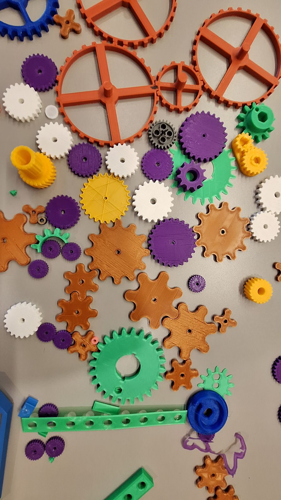
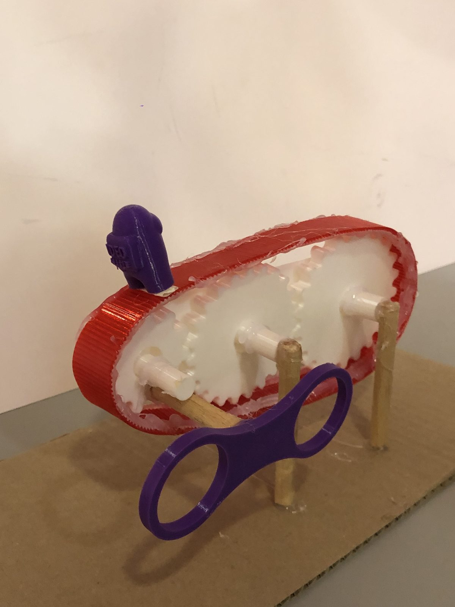
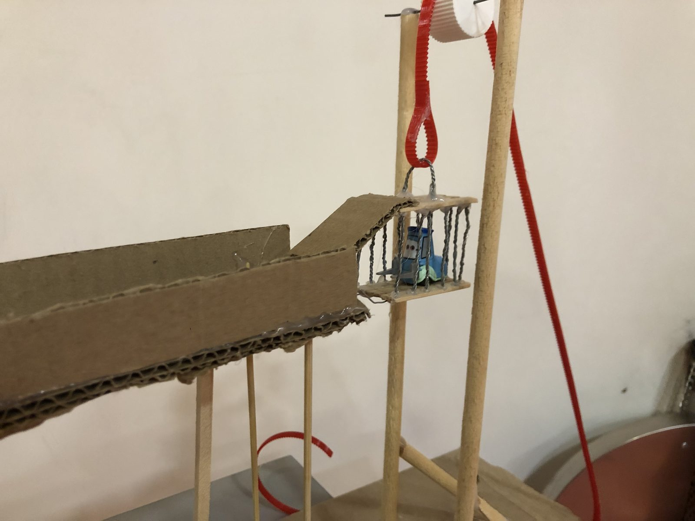
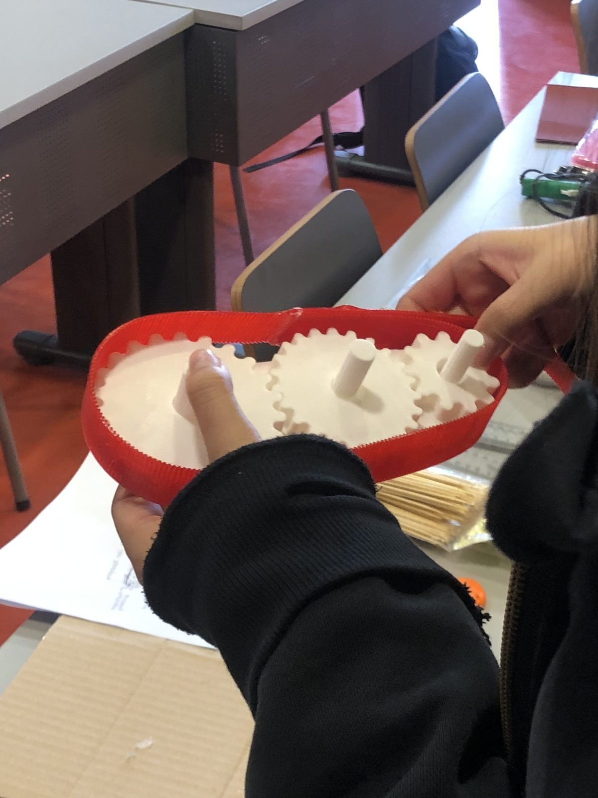
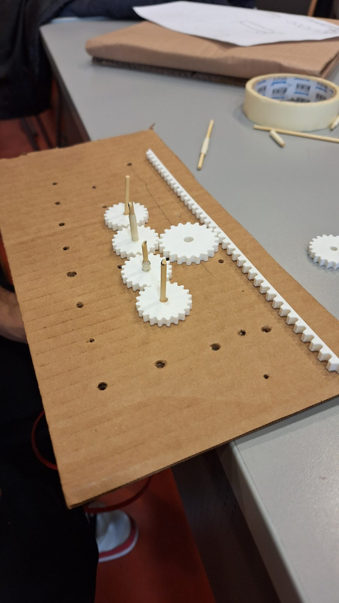
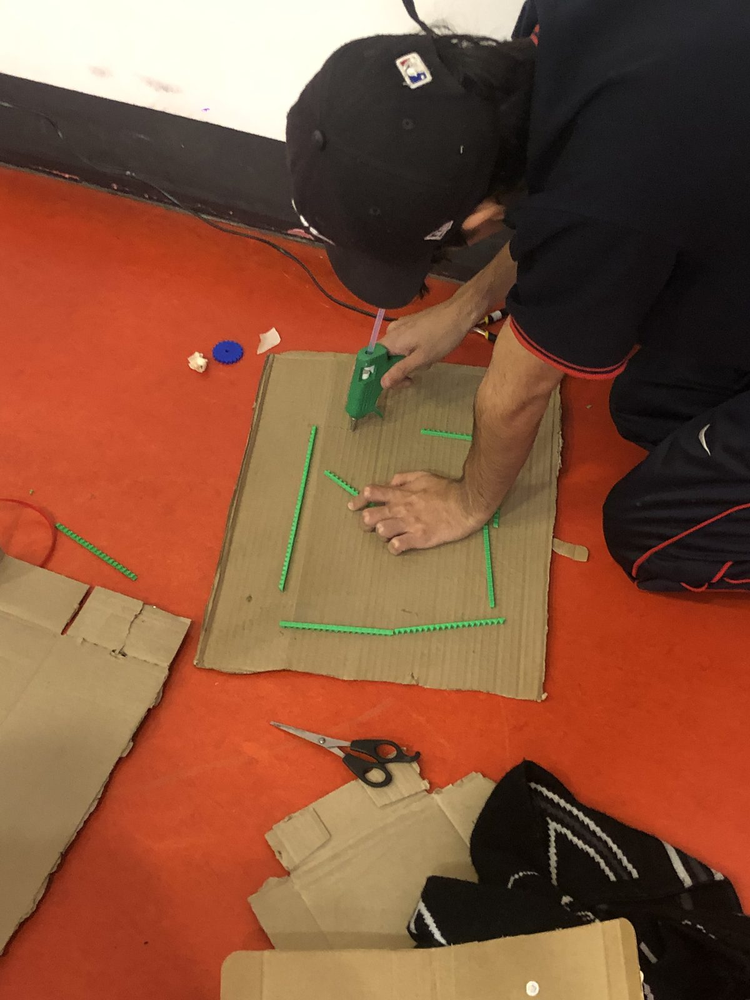
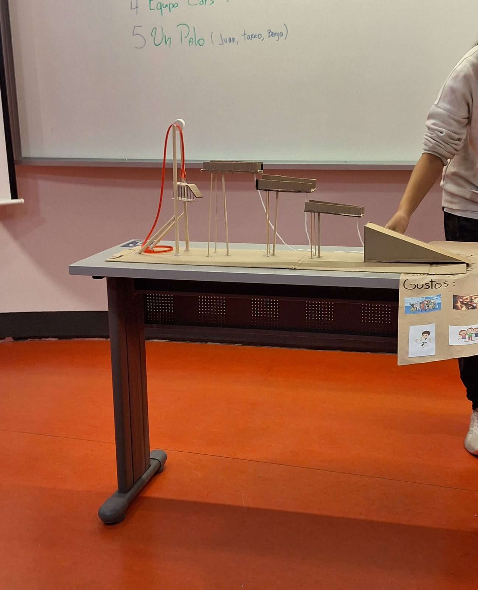
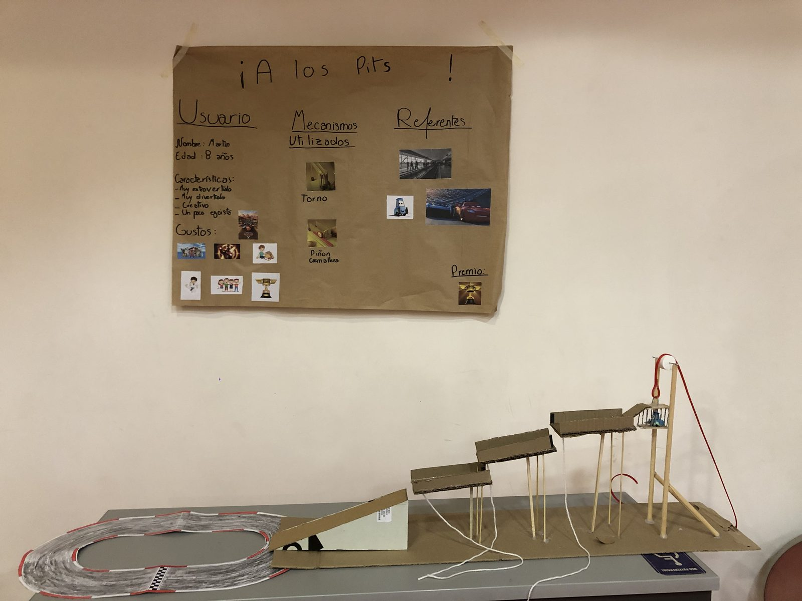
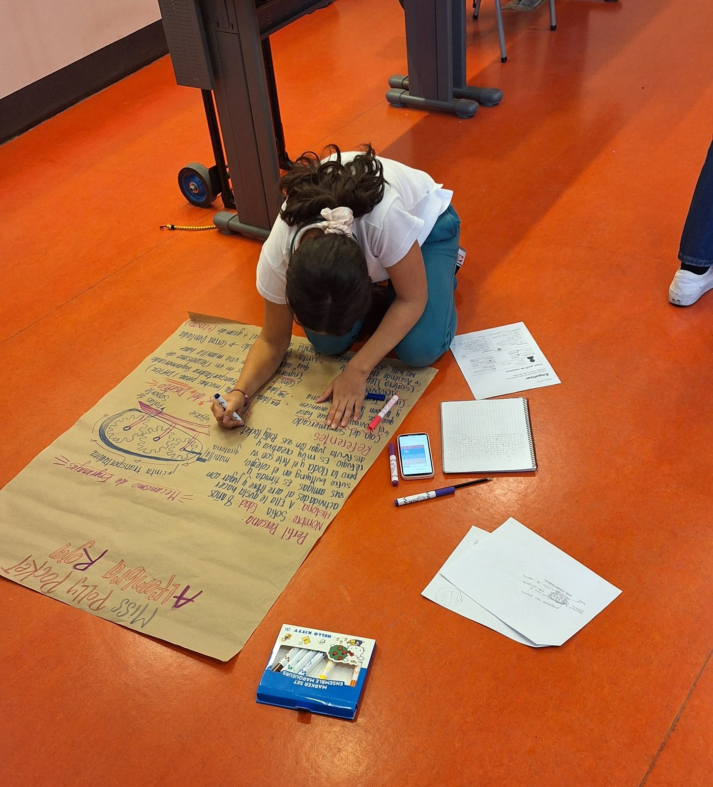
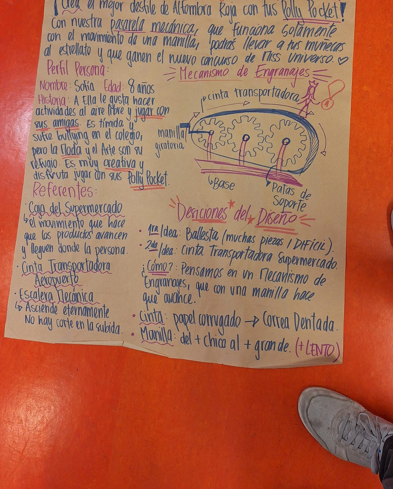
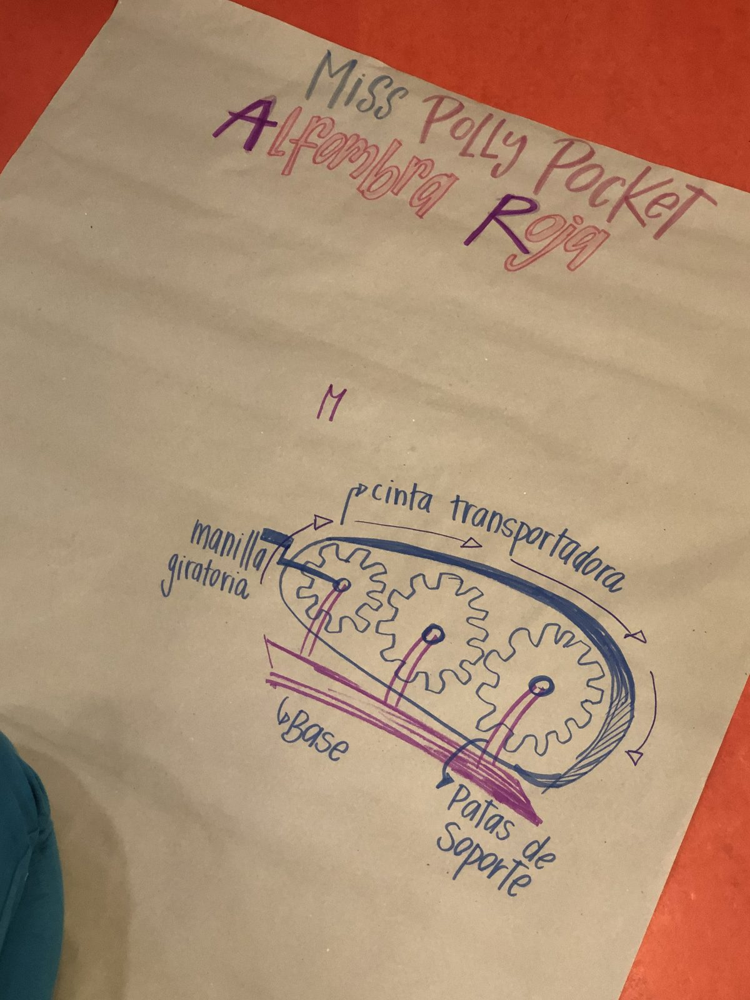
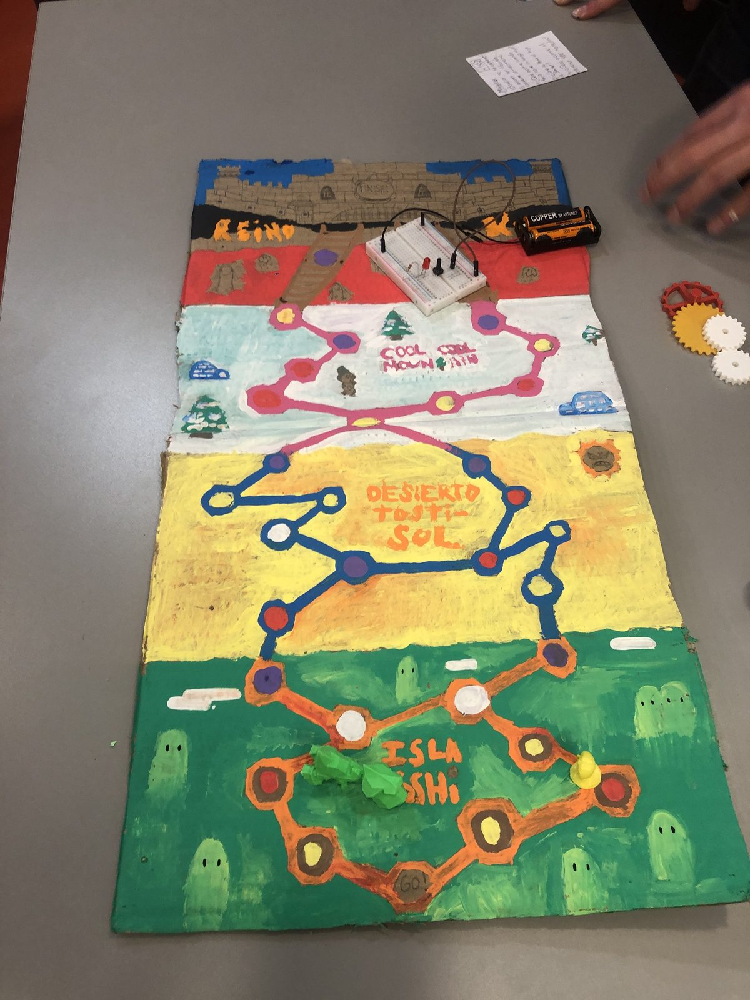
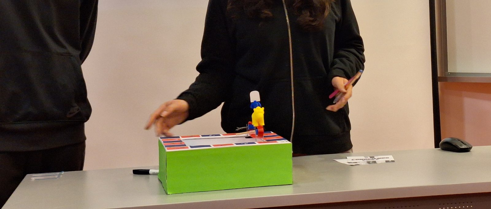
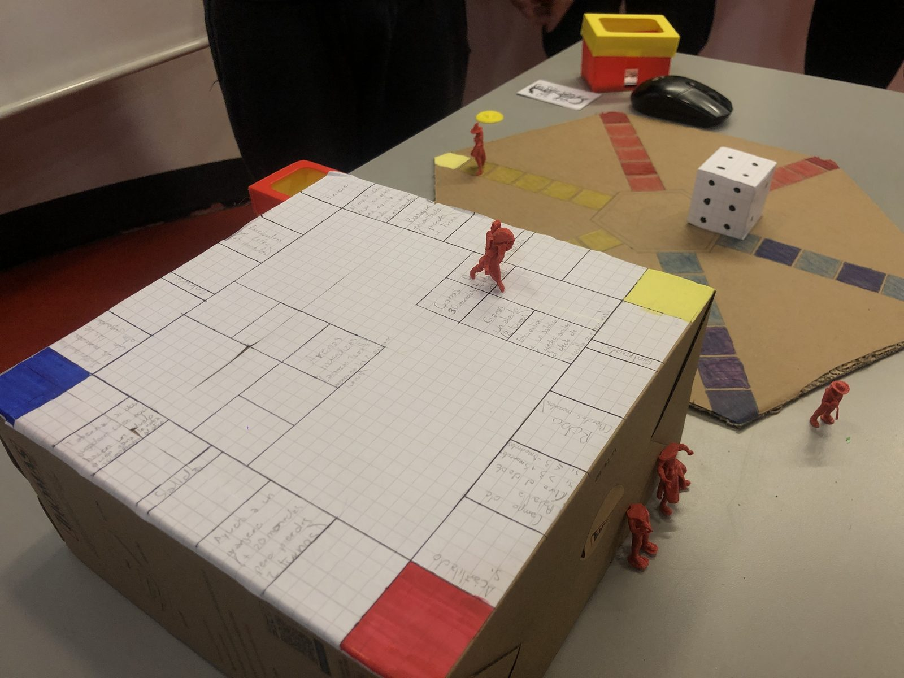